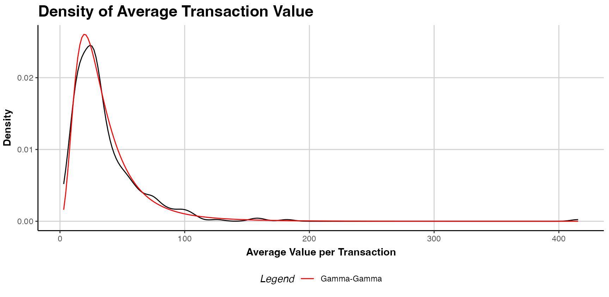

Prerequisites: Setup the R environment
Install the stable version from CRAN:
install.packages("CLVTools")Install the development version from GitHub (using the devtools package (Wickham, Hester, and Chang 2019)):
install.packages("devtools")
devtools::install_github("bachmannpatrick/CLVTools", ref = "master")Load the package
#Apply the CLVTools Package
General workflow
Independent of the probabilistic model applied in CLVTools, the general workflow consists of three main steps:
Create a
clv.dataobject containing the dataset and required meta-information such as date formats and column names in the dataset. After initializing the object, there is the option to add additional information on covariates in a separate step.Fit the model on the data provided.
Use the estimated model parameters to predict future customer purchase behavior.
Reporting and plotting results is facilitated by the implementation of well-known generic methods such as plot(), print() and summary(). These commands adapt their output according to the model state and may be used at any point of the workflow.
Load sample data provided in the package
As Input data CLVTools requires customers’ transaction history. Every transaction record consists of a purchase date and customer ID. Optionally, the price of the transaction may be included to allow for prediction of future customer spending using an additional Gamma/Gamma model(Fader, Hardie, and Lee 2005b; Colombo and Jiang 1999). Using the full history of transaction data allows for comprehensive plots and summary statistics, which allow the identification of possible issues prior to model estimation. Data may be provided as data.frame or data.table (Dowle and Srinivasan 2019).
It is common practice to split time series data into two parts, an estimation and a holdout period. The model is estimated based on the data from the estimation period while the data from the holdout period allows to rigorously assess model performance. Once model performance is checked on known data one can proceed to predict data without a holdout period. The length of the estimation period is heavily dependent on the characteristics of the analyzed dataset. We recommend to choose an estimation period that contains in minimum the length of the average inter-purchase time. Note that all customers in the dataset need to purchase at least once during the estimation period, i.e. these models do not account for prospects who have not yet a purchase record.
Some models included in CLVTools allow to model the impact of covariates. These covariates may explain heterogeneity among the customers and therefore increase the predictive accuracy of the model. At the same time we may also identify and quantify the effects of these covariates on customer purchase and customer attrition. CLVTools distinguishes between time-invariant and time-varying covariates. Time-invariant covariates include customer characteristics such as demographics that do not change over time. Time-varying covariates are allowed to change over time. They include for example direct marketing information or seasonal patterns.
For the following example, we use simulated data comparable to data from a retailer in the apparel industry. The dataset contains transactional detail records for every customer consisting of customer id, date of purchase and the total monetary value of the transaction.The apparel dataset is available in the CLVTools package. Use the data(apparelTrans) to load it:
data("apparelTrans")
apparelTrans
#> Id Date Price
#> 1: 1 2005-01-03 230.30
#> 2: 10 2005-01-03 84.39
#> 3: 10 2005-02-25 131.07
#> 4: 10 2005-04-05 86.43
#> 5: 100 2005-01-03 11.49
#> ---
#> 2349: 1221 2006-01-23 26.57
#> 2350: 1221 2006-03-09 129.82
#> 2351: 1221 2006-05-14 14.37
#> 2352: 1222 2005-01-03 44.77
#> 2353: 1222 2005-03-03 99.21Initialize the CLV-Object
Before we estimate a model, we are required to initialize a data object using the clvdata() command. The data object contains the prepared transactional data and is later used as input for model fitting. Make sure to store the generated object in a variable, e.g. in our example clv.apparel.
Be aware that probabilistic models such as the ones implemented in CLVTools are usually applied to specific customer cohorts. That means, you analyze customer that have joined your company at the same time (usually same day, week, month, or quarter). For more information on cohort analysis, see also here. Consequently, the data apparelTrans in this example is not the full transaction records of a fashion retailer, but rather only the customer cohort of 250 customers purchasing for the first time at this business on the day of 2005-01-03. This has to be done before initializing a data object using the clvdata() command.
Through the argument data.transactions a data.frame or data.table which contains the transaction records, is specified. In our example this is data.transactions=apparelTrans. The argument date.format is used to indicate the format of the date variable in the data used. The date format in the apparel dataset is given as “year-month-day” (i.e., “2005-01-03”), therefore we set date.format="ymd". Other combinations such as date.format="dmy" are possible. See the documentation of lubridate (Grolemund and Wickham 2011) for all details. time.unit is the scale used to measure time between two dates. For this dataset and in most other cases The argument time.unit="week" is the preferred choice. Abbreviations may be used (i.e. “w”). estimation.split indicates the length of the estimation period. Either the length of the estimation period (in previous specified time units) or the date at which the estimation period ends can be specified. If no value is provided, the whole dataset is used as estimation period (i.e. no holdout period). In this example, we use an estimation period of 40 weeks. Finally, the three name arguments indicate the column names for customer ID, date and price in the supplied dataset. Note that the price column is optional.
clv.apparel <- clvdata(apparelTrans,
date.format="ymd",
time.unit = "week",
estimation.split = 40,
name.id = "Id",
name.date = "Date",
name.price = "Price")
Check the clvdata Object
To get details on the clvdata object, print it to the console.
clv.apparel
#> CLV Transaction Data
#>
#> Call:
#> clvdata(data.transactions = apparelTrans, date.format = "ymd",
#> time.unit = "week", estimation.split = 40, name.id = "Id",
#> name.date = "Date", name.price = "Price")
#>
#> Total # customers 250
#> Total # transactions 2257
#> Spending information TRUE
#>
#>
#> Time unit Weeks
#>
#> Estimation start 2005-01-03
#> Estimation end 2005-10-10
#> Estimation length 40.0000 Weeks
#>
#> Holdout start 2005-10-11
#> Holdout end 2006-07-16
#> Holdout length 39.71429 WeeksAlternatively the summary() command provides full detailed summary statistics for the provided transactional detail. summary() is available at any step in the process of estimating a probabilistic customer attrition model with CLVTools. The result output is updated accordingly and additional information is added to the summary statistics.nobs() extracts the number of observations. For the this particular dataset we observe a total of 250 customers who made in total 2257 repeat purchases. Approximately 26% of the customers are zero repeaters, which means that the only a minority of the customers do not return to the store after their first purchase.
summary(clv.apparel)
#> CLV Transaction Data
#>
#> Time unit Weeks
#> Estimation length 40.0000 Weeks
#> Holdout length 39.71429 Weeks
#>
#> Transaction Data Summary
#> Estimation Holdout Total
#> Number of customers - - 250
#> First Transaction in period 2005-01-03 2005-10-11 2005-01-03
#> Last Transaction in period 2005-10-10 2006-07-16 2006-07-16
#> Total # Transactions 1311 946 2257
#> Mean # Transactions per cust 5.244 8.226 9.028
#> (SD) 6.082 8.934 12.603
#> Mean Spending per Transaction 39.436 38.519 39.051
#> (SD) 42.649 59.723 50.503
#> Total Spending 51700.490 36438.640 88139.130
#> Total # zero repeaters 77 135 65
#> Percentage # zero repeaters 0.308 0.540 0.260
#> Mean Interpurchase time 7.361 5.756 9.462
#> (SD) 6.791 6.394 12.266Estimate Model Parameters
After initializing the object, we are able to estimate the first probabilistic latent attrition model. We start with the standard Pareto/NBD model (Schmittlein, Morrison, and Colombo 1987) and therefore use the command pnbd() to fit the model and estimate model parameters. clv.data specifies the initialized object prepared in the last step. Optionally, starting values for the model parameters and control settings for the optimization algorithm may be provided: The argument start.params.model allows to assign a vector (e.g. c(alpha=1, beta=2, s=1, beta=2) in the case of the Pareto/NBD model) of starting values for the optimization. This is useful if prior knowledge on the parameters of the distributions are available. By default starting values are set to 1 for all parameters. The argument optimx.args provides an option to control settings for the optimization routine. It passes a list of arguments to the optimizer. All options known from the package optimx (Nash and Varadhan 2011; Nash 2014) may be used. This option enables users to specify specific optimization algorithms, set upper and/or lower limits or enable tracing information on the progress of the optimization. In the case of the standard Pareto/NBD model, CLVTools uses by default the optimization method L-BFGS-G (Byrd et al. 1995). If the result of the optimization is in-feasible, the optimization automatically switches to the more robust but often slower Nelder-Mead method (Nelder and Mead 1965). verbose shows additional output.
est.pnbd <- pnbd(clv.data = clv.apparel)
#> Starting estimation...
#> Estimation finished!
est.pnbd
#> Pareto NBD Standard Model
#>
#> Call:
#> pnbd(clv.data = clv.apparel)
#>
#> Coefficients:
#> r alpha s beta
#> 0.7866 5.3349 0.3570 11.6152
#> KKT1: TRUE
#> KKT2: TRUE
#>
#> Used Options:
#> Correlation: FALSEIf we assign starting parameters and additional arguments for the optimizer we use:
est.pnbd <- pnbd(clv.data = clv.apparel,
start.params.model = c(r=1, alpha = 2, s = 1, beta = 2),
optimx.args = list(control=list(trace=5),
method="Nelder-Mead"
))Parameter estimates may be reported by either printing the estimated object (i.e. est.pnbd) directly in the console or by calling summary(est.pnbd) to get a more detailed report including the likelihood value as well as AIC and BIC. Alternatively parameters may be directly extracted using coef(est.pnbd). Also loglik(), confint() and vcov() are available to directly access the Loglikelihood value, confidence intervals for the parameters and to calculate the Variance-Covariance Matrix for the fitted model. For the standard Pareto/NBD model, we get 4 parameters \(r, \alpha, s\) and \(\beta\). where \(r,\alpha\) represent the shape and scale parameter of the gamma distribution that determines the purchase rate and \(s,\beta\) of the attrition rate across individual customers. \(r/\alpha\) can be interpreted as the mean purchase and \(s/\beta\) as the mean attrition rate. A significance level is provided for each parameter estimates. In the case of the apparelTrans dataset we observe a an average purchase rate of \(r/\alpha=0.147\) transactions and an average attrition rate of \(s/\beta=0.031\) per customer per week. KKT 1 and 2 indicate the Karush-Kuhn-Tucker optimality conditions of the first and second order (Kuhn and Tucker 1951). If those criteria are not met, the optimizer has probably not arrived at an optimal solution. If this is the case it is usually a good idea to rerun the estimation using alternative starting values.
#Full detailed summary of the parameter estimates
summary(est.pnbd)
#> Pareto NBD Standard Model
#>
#> Call:
#> pnbd(clv.data = clv.apparel)
#>
#> Fitting period:
#> Estimation start 2005-01-03
#> Estimation end 2005-10-10
#> Estimation length 40.0000 Weeks
#>
#> Coefficients:
#> Estimate Std. Error z-val Pr(>|z|)
#> r 0.7866 0.1324 5.942 2.81e-09 ***
#> alpha 5.3349 0.9027 5.910 3.42e-09 ***
#> s 0.3570 0.1838 1.943 0.0521 .
#> beta 11.6152 10.6598 1.090 0.2759
#> ---
#> Signif. codes: 0 '***' 0.001 '**' 0.01 '*' 0.05 '.' 0.1 ' ' 1
#>
#> Optimization info:
#> LL -2879.4699
#> AIC 5766.9399
#> BIC 5781.0257
#> KKT 1 TRUE
#> KKT 2 TRUE
#> fevals 23.0000
#> Method L-BFGS-B
#>
#> Used Options:
#> Correlation FALSE
#Extract the coefficients only
coef(est.pnbd)
#> r alpha s beta
#> 0.7865982 5.3349363 0.3570472 11.6151630
#Alternative: oefficients(est.pnbd.obj)To extract only the coefficients, we can use coef(). To access the confidence intervals for all parameters confint() is available.
#Extract the coefficients only
coef(est.pnbd)
#> r alpha s beta
#> 0.7865982 5.3349363 0.3570472 11.6151630
#Alternative: oefficients(est.pnbd.obj)
#Extract the confidence intervals
confint(est.pnbd)
#> 2.5 % 97.5 %
#> r 0.527143413 1.0460530
#> alpha 3.565676736 7.1041959
#> s -0.003172205 0.7172665
#> beta -9.277581357 32.5079074In order to get the Likelihood value and the corresponding Variance-Covariance Matrix we use the following commands:
# LogLikelihood at maximum
logLik(est.pnbd)
#> 'log Lik.' -2879.47 (df=4)
# Variance-Covariance Matrix at maximum
vcov(est.pnbd)
#> r alpha s beta
#> r 0.01752376 0.10255385 -0.00561020 -0.5538978
#> alpha 0.10255385 0.81486739 -0.02386251 -2.4623808
#> s -0.00561020 -0.02386251 0.03377831 1.8512345
#> beta -0.55389777 -2.46238080 1.85123446 113.6304689As an alternative to the Pareto/NBD model CLVTools features the BG/NBD model (Fader, Hardie, and Lee 2005a) and the GGomp/NBD (Bemmaor and Glady 2012). To use the alternative models replace pnbd() by the corresponding model-command. Note that he naming and number of model parameters is dependent on the model. Consult the manual for more details on the individual models. Beside probabilistic latent attrition models, CLVTools also features the Gamma/Gamma model (Colombo and Jiang 1999; Fader, Hardie, and Lee 2005a) which is used to predict customer spending. See section Customer Spending for details on the spending model.
| Command | Model | Covariates | Type | |
|---|---|---|---|---|
| pnbd() | Pareto/NBD | time-invariant & time-varying | latent attrition model | |
| bgnbd() | BG/NBD | time-invariant | latent attrition model | |
| ggomnbd() | GGom/NBD | time-invariant | latent attrition model | |
| gg() | Gamma/Gamma | - | spending model |
To estimate the GGom/NBD model we apply the ggomnbd()to the clv.apparel object. The GGom/NBD model is more flexible than the Pareto/NBD model, however it sometimes is challenging to optimize. Note that in this particular case providing start parameters is essential to arrive at an optimal solution (i.e. kkt1: TRUE and kkt2: TRUE).
Predict Customer Behavior
Once the model parameters are estimated, we are able to predict future customer behavior on an individual level. To do so, we use predict() on the object with the estimated parameters (i.e. est.pnbd). The prediction period may be varied by specifying prediction.end. It is possible to provide either an end-date or a duration using the same time unit as specified when initializing the object (i.e prediction.end = "2006-05-08" or prediction.end = 30). By default, the prediction is made until the end of the dataset specified in the clvdata() command. The argument continuous.discount.factor allows to adjust the discount rate used to estimated the discounted expected transactions (DERT). The default value is 0.1 (=10%). Probabilistic customer attrition model predict in general three expected characteristics for every customer:
- “conditional expected transactions” (CET), which is the number of transactions to expect form a customer during the prediction period,
- “probability of a customer being alive” (PAlive) at the end of the estimation period and
- “discounted expected residual transactions” (DERT) for every customer, which is the total number of transactions for the residual lifetime of a customer discounted to the end of the estimation period.
If spending information was provided when initializing the clvdata-object, CLVTools provides prediction for
- predicted mean spending estimated by a Gamma/Gamma model (Colombo and Jiang 1999; Fader, Hardie, and Lee 2005a) and
- the customer lifetime value (CLV). CLV is calculated as the product of DERT and predicted spending.
If a holdout period is available additionally the true numbers of transactions (“actual.x”) and true spending (“actual.total.spending”) during the holdout period are reported.
To use the parameter estimates on new data (e.g., an other customer cohort), the argument newdata optionally allows to provide a new clvdata object.
results <- predict(est.pnbd)
#> Predicting from 2005-10-11 until (incl.) 2006-07-16 (39.86 Weeks).
#> Estimating gg model to predict spending...
#> Starting estimation...
#> Estimation finished!
print(results)
#> Id period.first period.last period.length actual.x actual.total.spending
#> 1: 1 2005-10-11 2006-07-16 39.85714 0 0.00
#> 2: 10 2005-10-11 2006-07-16 39.85714 0 0.00
#> 3: 100 2005-10-11 2006-07-16 39.85714 23 737.53
#> 4: 1000 2005-10-11 2006-07-16 39.85714 23 1069.91
#> 5: 1001 2005-10-11 2006-07-16 39.85714 11 364.00
#> ---
#> 246: 1219 2005-10-11 2006-07-16 39.85714 14 413.76
#> 247: 122 2005-10-11 2006-07-16 39.85714 0 0.00
#> 248: 1220 2005-10-11 2006-07-16 39.85714 0 0.00
#> 249: 1221 2005-10-11 2006-07-16 39.85714 9 302.65
#> 250: 1222 2005-10-11 2006-07-16 39.85714 0 0.00
#> PAlive CET DERT predicted.mean.spending predicted.CLV
#> 1: 0.3571791 0.2212506 0.05848859 39.95483 2.336902
#> 2: 0.4225636 0.9272819 0.24513121 55.23031 13.538672
#> 3: 0.9155479 13.5448630 3.58064629 43.57390 156.022721
#> 4: 0.9967780 13.1766970 3.48331993 41.60921 144.938180
#> 5: 0.5098134 3.5275846 0.93253307 45.58153 42.506281
#> ---
#> 246: 0.9579241 3.6108002 0.95453149 33.58728 32.060115
#> 247: 0.3571791 0.2212506 0.05848859 39.95483 2.336902
#> 248: 0.3571791 0.2212506 0.05848859 39.95483 2.336902
#> 249: 0.9434302 4.2991096 1.13648922 34.28958 38.969738
#> 250: 0.4136156 0.5819279 0.15383529 47.35500 7.284870To change the duration of the prediction time, we use the predicton.end argument. We can either provide a time period (30 weeks in this example):
predict(est.pnbd, prediction.end = 30)or provide a date indication the end of the prediction period:
predict(est.pnbd, prediction.end = "2006-05-08")Plot Transactions
clvdata objects may be plotted using the plot() command. Similar to summary(), the output of plot() adapts to the current modeling step. It provides a descriptive plot of the actual transactional data if the model has not yet been fitted. Once the model has been estimated, plot() provides an aggregated incremental tracking plot of the actual data and the model based on the estimated parameters. The time-span for the plot may be altered using the prediction.end argument by providing either a duration or an end date. By default the plot is generated for the entire time-span of the provided dataset specified in the clvdata() command. The dashed line indicates the end of the estimation period. Alternatively cumulative actual and expected transactions can be plotted by setting cumulative to TRUE. The argument transactions disable for plotting actual transactions (transactions=FALSE). For further plotting options see the documentation.
plot(est.pnbd)
#> Plotting from 2005-01-03 until 2006-07-16. s To plot the cumulative expected transactions 30 time units (30 weeks in this example) ahead of the end of the estimation plot, we use:
s To plot the cumulative expected transactions 30 time units (30 weeks in this example) ahead of the end of the estimation plot, we use:
plot(est.pnbd, prediction.end = 30, cumulative = TRUE)Alternatively, it is possible to specify a date for the prediction.endargument. Note that dates are rounded to the next full time unit (i.e. week):
plot(est.pnbd, prediction.end = "2006-05-08", cumulative = TRUE)Covariates
CLVTools provides the option to include covariates into probabilistic customer attrition models. Covariates may affect the purchase or the attrition process, or both. It is also possible to include different covariates for the two processes. However, support for covariates is dependent on the model. Not all implemented models provide the option for covariates. In general, CLVTools distinguishes between two types of covariates: time-invariant and time-varying. The former include factors that do not change over time such as customer demographics or customer acquisition information. The latter may change over time and include marketing activities or seasonal patterns.
Data for time-invariant covariates must contain a unique customer ID and a single value for each covariate. It should be supplied as a data.frame or data.table. In the example of the apparel retailer we use demographic information “gender” as time-invariant and information on the acquisition channel as covariate for both, the purchase and the attrition process. Use the data("apparelStaticCov") command to load the time-invariant covariates. In this example gender is coded as a dummy variable with male=0 and female=1 and channel with online=0 and offline=1.
data("apparelStaticCov")
apparelStaticCov
#> Id Gender Channel
#> 1: 1 0 0
#> 2: 10 0 0
#> 3: 100 1 0
#> 4: 1000 1 1
#> 5: 1001 1 0
#> ---
#> 246: 1219 0 1
#> 247: 122 0 0
#> 248: 1220 0 0
#> 249: 1221 1 1
#> 250: 1222 1 0Data for time-varying covariates requires a time-series of covariate values for every customer. I.e. if the time-varying covariates are allowed to change every week, a value for every customer for every week is required. Note that all contextual factors are required to use the same time intervals for the time-series. In the example of the apparel retailer we use information on direct marketing (Marekting) as time-varying covariate. Additionally, we add gender as time-invariant contextual factors. Note that the data structure of invariant covariates needs to be aligned with the structure of time-varying covariate. Use data("apparelDynCov") command to load
data("apparelDynCov")
apparelDynCov
#> Id Cov.Date Marketing Gender Channel
#> 1: 1 2004-12-26 1 0 0
#> 2: 1 2005-01-02 1 0 0
#> 3: 1 2005-01-09 0 0 0
#> 4: 1 2005-01-16 1 0 0
#> 5: 1 2005-01-23 2 0 0
#> ---
#> 20496: 1222 2006-06-18 0 1 0
#> 20497: 1222 2006-06-25 0 1 0
#> 20498: 1222 2006-07-02 0 1 0
#> 20499: 1222 2006-07-09 0 1 0
#> 20500: 1222 2006-07-16 0 1 0To add the covariates to an initialized clvdata object the commands SetStaticCovariates() and SetDynamicCovariates() are available. The two commands are mutually exclusive. The argument clv.data specifies the initialized object and the argument data.cov.life respectively data.cov.trans specifies the data source for the covariates for the attrition and the purchase process. Covariates are added separately for the purchase and the attrition process. Therefore if a covariate should affect both processes it has to be added in both arguments: data.cov.life and data.cov.trans. The arguments names.cov.life and names.cov.trans specify the column names of the covariates for the two processes. In our example, we use the same covariates for both processes. Accordingly, we specify the time-invariant covariates “Gender” and “Channel” as follows:
clv.static<- SetStaticCovariates(clv.data = clv.apparel,
data.cov.life = apparelStaticCov,
data.cov.trans = apparelStaticCov,
names.cov.life = c("Gender", "Channel"),
names.cov.trans =c("Gender", "Channel"),
name.id = "Id")To specify the time-varying contextual factors for seasonal patterns and direct marketing, we use the following:
clv.dyn <- SetDynamicCovariates(clv.data = clv.apparel,
data.cov.life = apparelDynCov,
data.cov.trans = apparelDynCov,
names.cov.life = c("Marketing", "Gender", "Channel"),
names.cov.trans = c("Marketing", "Gender", "Channel"),
name.id = "Id",
name.date = "Cov.Date")In order to include time-invariant covariates in a time-varying model, they may be recoded as a time-varying covariate with a constant value in every time period.
Once the covariates are added to the model the estimation process is almost identical to the standard model without covariates. The only difference is that the provided object now data for contains either time-invariant or time-varying covariates and the option to define start parameters for the covariates of both processes using the arguments start.params.life and start.params.trans. If not set, the staring values are set to 1. To define starting parameters for the covariates, the name of the corresponding factor has to be used. For example in the case of time-invariant covariates:
est.pnbd.static <- pnbd(clv.static,
start.params.model = c(r=1, alpha = 2, s = 1, beta = 2),
start.params.life = c(Gender=0.6, Channel=0.4),
start.params.trans = c(Gender=0.6, Channel=0.4))
#> Starting estimation...
#> Estimation finished!Analogously, we can estimate the model containing time-varying covariates.
est.pnbd.dyn <- pnbd(clv.dyn,
start.params.model = c(r=1, alpha = 2, s = 1, beta = 2),
start.params.life = c(Marketing=0.5, Gender=0.6, Channel=0.4),
start.params.trans = c(Marketing=0.5, Gender=0.6, Channel=0.4))To inspect the estimated model we use summary(), however all other commands such as print(), coef(), loglike(), confint() and vcov() are also available. Now, output contains also parameters for the covariates for both processes. Since covariates are added separately for the purchase and the attrition process, there are also separate model parameters for the two processes. These parameters are directly interpretable as rate elasticity of the corresponding factors: A 1% change in a contextual factor \(\bf{X}^{P}\) or \(\bf{X}^{L}\) changes the purchase or the attrition rate by \(\gamma_{purch}\bf{X}^{P}\) or \(\gamma_{life}\bf{X}^{L}\) percent, respectively (Gupta 1991). In the example of the apparel retailer, we observe that female customer purchase significantly more (trans.Gender=1.42576). Note, that female customers are coded as 1, male customers as 0. Also customers acquired offline (coded as Channel=1), purchase more (trans.Channel=0.40304) and stay longer (life.Channel=0.9343). Make sure to check the Karush-Kuhn-Tucker optimality conditions of the first and second order (Kuhn and Tucker 1951) (KKT1 and KKT1) before interpreting the parameters. If those criteria are not met, the optimizer has probably not arrived at an optimal solution. If this is the case it is usually a good idea to rerun the estimation using alternative starting values.
summary(est.pnbd.static)
#> Pareto NBD with Static Covariates Model
#>
#> Call:
#> pnbd(clv.data = clv.static, start.params.model = c(r = 1, alpha = 2,
#> s = 1, beta = 2), start.params.life = c(Gender = 0.6, Channel = 0.4),
#> start.params.trans = c(Gender = 0.6, Channel = 0.4))
#>
#> Fitting period:
#> Estimation start 2005-01-03
#> Estimation end 2005-10-10
#> Estimation length 40.0000 Weeks
#>
#> Coefficients:
#> Estimate Std. Error z-val Pr(>|z|)
#> r 1.41800 0.27733 5.113 3.17e-07 ***
#> alpha 35.62069 8.58072 4.151 3.31e-05 ***
#> s 0.27258 0.09512 2.866 0.00416 **
#> beta 8.63265 11.26299 0.766 0.44340
#> life.Gender 1.53314 1.09655 1.398 0.16207
#> life.Channel -1.70528 0.66153 -2.578 0.00994 **
#> trans.Gender 1.42366 0.19764 7.203 5.88e-13 ***
#> trans.Channel 0.40225 0.15123 2.660 0.00782 **
#> ---
#> Signif. codes: 0 '***' 0.001 '**' 0.01 '*' 0.05 '.' 0.1 ' ' 1
#>
#> Optimization info:
#> LL -2846.1677
#> AIC 5708.3355
#> BIC 5736.5071
#> KKT 1 TRUE
#> KKT 2 TRUE
#> fevals 52.0000
#> Method L-BFGS-B
#>
#> Used Options:
#> Correlation FALSE
#> Regularization FALSE
#> Constraint covs FALSETo predict future customer behavior we use predict(). Note that dependent on the model, the predicted metrics may differ. For example, in the case of the Pareto/NBD model with time-varying covariates, instead of DERT, DECT is predicted. DECT only covers a finite time horizon in contrast to DERT. Time-varying covariates must be provided for the entire prediction period. If the data initially provided in the SetDynamicCovariates() command does not cover the complete prediction period, the argument new.data offers the ability to supply new data for the time-varying covariates in the from of a clvdata object.
Add Correlation to the model
To relax the assumption of independence between the purchase and the attrition process, CLVTools provides the option to specify the argument use.cor in the command t fit the model (i.e. pnbd). In case of use.cor=TRUE, a Sarmanov approach is used to correlate the two processes. start.param.cor allows to optionally specify a starting value for the correlation parameter.
The parameter Cor(life,trans) is added to the parameter estimates that may be directly interpreted as a correlation. In the example of the apparel retailer the correlation parameter is not significant and the correlation is very close to zero, indicating that the purchase and the attrition process are independent.
Advanced Options for Contextual Factors
CLVTools provides two additional estimation options for models containing covariates (time-invariant or time-varying): regularization and constraints for the parameters of the covariates. Both options are included in the command to fit the model (i.e., pnbd(). Support for this option is dependent on the model. They may be used simultaneously.
- The argument
reg.lambdasprovides the possibility to specify separate\lambda_{reg}for the two processes (i.e.reg.lambdas = c(trans=100, life=100). The larger the\lambda_{reg}the stronger the effects of the regularization. Regularization only affects the parameters of the covariates. - The argument
names.cov.constrimplements equality constraints for contextual factors with regards to the two processes. For example the variable “gender” is forced to have the same effect on the purchase as well as on the attrition process. To do so, the optionnames.cov.constris available (i.e.names.cov.constr=c("Gender")). To provide starting parameters for the constrained variable usestart.params.constr.
To enable regularization for the covariates, we use the following command:
est.pnbd.reg <- pnbd(clv.static,
start.params.model = c(r=1, alpha = 2, s = 1, beta = 2),
reg.lambdas = c(trans=100, life=100))
#> Starting estimation...
#> Estimation finished!
summary(est.pnbd.reg)
#> Pareto NBD with Static Covariates Model
#>
#> Call:
#> pnbd(clv.data = clv.static, start.params.model = c(r = 1, alpha = 2,
#> s = 1, beta = 2), reg.lambdas = c(trans = 100, life = 100))
#>
#> Fitting period:
#> Estimation start 2005-01-03
#> Estimation end 2005-10-10
#> Estimation length 40.0000 Weeks
#>
#> Coefficients:
#> Estimate Std. Error z-val Pr(>|z|)
#> r 7.871e-01 2.093e+00 0.376 0.707
#> alpha 5.343e+00 1.430e+01 0.374 0.709
#> s 3.468e-01 2.734e+00 0.127 0.899
#> beta 1.111e+01 1.576e+02 0.071 0.944
#> life.Gender -2.514e-05 1.576e-02 -0.002 0.999
#> life.Channel -1.162e-04 1.576e-02 -0.007 0.994
#> trans.Gender 5.362e-04 1.576e-02 0.034 0.973
#> trans.Channel 4.422e-04 1.576e-02 0.028 0.978
#>
#> Optimization info:
#> LL -11.5178
#> AIC 39.0357
#> BIC 67.2074
#> KKT 1 TRUE
#> KKT 2 TRUE
#> fevals 158.0000
#> Method L-BFGS-B
#>
#> Used Options:
#> Correlation FALSE
#> Regularization TRUE
#> lambda.life 100.0000
#> lambda.trans 100.0000
#> Constraint covs FALSETo constrain “Gender” to have the same effect on both processes we use the following command. Note, that the output now only contains one parameter for “Gender” as it is constrained to be the same for both processes.
est.pnbd.constr <- pnbd(clv.static,
start.params.model = c(r=1, alpha = 2, s = 1, beta = 2),
start.params.constr = c(Gender=0.6),
names.cov.constr=c("Gender"))
#> Starting estimation...
#> Estimation finished!
summary(est.pnbd.constr)
#> Pareto NBD with Static Covariates Model
#>
#> Call:
#> pnbd(clv.data = clv.static, start.params.model = c(r = 1, alpha = 2,
#> s = 1, beta = 2), names.cov.constr = c("Gender"), start.params.constr = c(Gender = 0.6))
#>
#> Fitting period:
#> Estimation start 2005-01-03
#> Estimation end 2005-10-10
#> Estimation length 40.0000 Weeks
#>
#> Coefficients:
#> Estimate Std. Error z-val Pr(>|z|)
#> r 1.42491 0.27552 5.172 2.32e-07 ***
#> alpha 35.43796 8.37521 4.231 2.32e-05 ***
#> s 0.27249 0.09451 2.883 0.00393 **
#> beta 7.72441 7.53594 1.025 0.30536
#> life.Channel -1.69866 0.64451 -2.636 0.00840 **
#> trans.Channel 0.40107 0.15098 2.656 0.00790 **
#> constr.Gender 1.41494 0.18404 7.688 1.49e-14 ***
#> ---
#> Signif. codes: 0 '***' 0.001 '**' 0.01 '*' 0.05 '.' 0.1 ' ' 1
#>
#> Optimization info:
#> LL -2846.1731
#> AIC 5706.3462
#> BIC 5730.9964
#> KKT 1 TRUE
#> KKT 2 TRUE
#> fevals 28.0000
#> Method L-BFGS-B
#>
#> Used Options:
#> Correlation FALSE
#> Regularization FALSE
#> Constraint covs TRUE
#> Constraint params GenderCustomer Spending
Customer lifetime value (CLV) is composed of three components of every customer: the future level of transactions, expected attrition behaviour (i.e. probability of being alive) and the monetary value. While probabilistic latent attrition models provide metrics for the first two components, they do not predict customer spending. To predict customer spending an additional model is required. The CLVToolspackage features the Gamma/Gamma (G/G) (Fader, Hardie, and Lee 2005b; Colombo and Jiang 1999) model for predicting customer spending. For convenience, the predict() command allows to automatically predict customer spending for all latent attrition models using the option predict.spending=TRUE (see section Customer Spending). However, to provide more options and more granular insights the Gamma/Gamma model can be estimated independently. In the following, we discuss how to estimate a Gamma/Gamma model using CLVTools.
The general workflow remains identical. It consists of the three main steps: (1) creating a clv.data object containing the dataset and required meta-information, (2) fitting the model on the provided data and (3) predicting future customer purchase behavior based on the fitted model.
Reporting and plotting results is facilitated by the implementation of well-known generic methods such as plot(), print() and summary().
Load sample data provided in the package
For estimating customer spending CLVTools requires customers’ transaction history including price. Every transaction record consists of a purchase date,customer ID and the price of the transaction. Data may be provided as data.frame or data.table (Dowle and Srinivasan 2019). Currently, the Gamma/Gamma model does not allow for covariates.
We use again simulated data comparable to data from a retailer in the apparel industry. The apparel dataset is available in the CLVTools package. We use the data(apparelTrans) to load it and initialize a data object using the clvdata() command. For details see section Initialize the CLV-Object.
data("apparelTrans")
apparelTrans
#> Id Date Price
#> 1: 1 2005-01-03 230.30
#> 2: 10 2005-01-03 84.39
#> 3: 10 2005-02-25 131.07
#> 4: 10 2005-04-05 86.43
#> 5: 100 2005-01-03 11.49
#> ---
#> 2349: 1221 2006-01-23 26.57
#> 2350: 1221 2006-03-09 129.82
#> 2351: 1221 2006-05-14 14.37
#> 2352: 1222 2005-01-03 44.77
#> 2353: 1222 2005-03-03 99.21
clv.apparel <- clvdata(apparelTrans,
date.format="ymd",
time.unit = "week",
estimation.split = 40,
name.id = "Id",
name.date = "Date",
name.price = "Price")Estimate Model Parameters
To estimate the Gamma/Gamma spending model, we use the command gg() on the initialized clvdata object. clv.data specifies the initialized object prepared in the last step. Optionally, starting values for the model parameters and control settings for the optimization algorithm may be provided: The argument start.params.model allows to assign a vector of starting values for the optimization (i.e c(p=1, q=2, gamma=1) for the the Gamma/Gamma model). This is useful if prior knowledge on the parameters of the distributions are available. By default starting values are set to 1 for all parameters. The argument optimx.args provides an option to control settings for the optimization routine (see section Estimate Model Parameters).
est.gg<- gg(clv.data = clv.apparel)
#> Starting estimation...
#> Estimation finished!
est.gg
#> Gamma-Gamma Model
#>
#> Call:
#> gg(clv.data = clv.apparel)
#>
#> Coefficients:
#> p q gamma
#> 2.305 17.148 279.974
#> KKT1: TRUE
#> KKT2: TRUEIn line with literature, CLVTools does not use by default the monetary value of the first transaction to fit the model since it might be atypical of future purchases. If the first transaction should be considered the argument remove.first.transaction can be set to FALSE.
est.gg<- gg(clv.data = clv.apparel, remove.first.transaction=FALSE)
#> Starting estimation...
#> Estimation finished!
est.gg
#> Gamma-Gamma Model
#>
#> Call:
#> gg(clv.data = clv.apparel, remove.first.transaction = FALSE)
#>
#> Coefficients:
#> p q gamma
#> 2.47 15.45 227.09
#> KKT1: TRUE
#> KKT2: TRUEPredict Customer Spending
Once the model parameters are estimated, we are able to predict future customer mean spending on an individual level. To do so, we use predict() on the object with the estimated parameters (i.e. est.gg). Note that there is no need to specify a prediction period as we predict mean spending.
In general, probabilistic spending models predict the following expected characteristic for every customer:
- predicted mean spending (“predicted.mean.spending”)
If a holdout period is available additionally the true mean spending (“actual.mean.spending”) during the holdout period is reported.
To use the parameter estimates on new data (e.g., an other customer cohort), the argument newdata optionally allows to provide a new clvdata object.
results.spending <- predict(est.gg)
print(results.spending)
#> Id actual.mean.spending predicted.mean.spending
#> 1: 1 0.00000 66.78361
#> 2: 10 0.00000 59.77959
#> 3: 100 32.06652 42.18584
#> 4: 1000 46.51783 40.32674
#> 5: 1001 33.09091 44.89572
#> ---
#> 246: 1219 29.55429 30.40038
#> 247: 122 0.00000 35.19998
#> 248: 1220 0.00000 37.77123
#> 249: 1221 33.62778 31.27807
#> 250: 1222 0.00000 47.27699Plot Spendings
an estimated spending model object (i.e. est.gg) may be plotted using the plot() command. The plot provides a comparison of the estimated and actual density of customer spending. The argument plot.interpolation.points allows to adjust the number of interpolation points in density graph.
plot(est.gg)
Literature
Bemmaor, Albert. C., and Nicolas Glady. 2012. “Modeling Purchasing Behavior with Sudden "Death": A Flexible Customer Lifetime Model.” Management Science 58 (5): 1012–21.
Byrd, Richard H, Peihuang Lu, Jorge Nocedal, and Ciyou Zhu. 1995. “A Limited Memory Algorithm for Bound Constrained Optimization.” SIAM Journal on Scientific Computing 16 (5): 1190–1208.
Colombo, Richard, and Weina Jiang. 1999. “A stochastic RFM model.” Journal of Interactive Marketing 13 (3): 2–12.
Dowle, Matt, and Arun Srinivasan. 2019. Data.table: Extension of ’Data.frame’. https://CRAN.R-project.org/package=data.table.
Fader, Peter S., Bruce G. S. Hardie, and KL Lee. 2005a. “’Counting Your Customers’ the Easy Way: An Alternative to the Pareto/NBD Model.” Marketing Science 24 (2): 275–84.
———. 2005b. “RFM and CLV: Using Iso-Value Curves for Customer Base Analysis.” Journal of Marketing Research 42 (4): 415–30.
Grolemund, Garrett, and Hadley Wickham. 2011. “Dates and Times Made Easy with lubridate.” Journal of Statistical Software 40 (3): 1–25. https://www.jstatsoft.org/article/view/v040i03.
Gupta, Sunil. 1991. “Stochastic Models of Interpurchase Time with Time-Dependent Covariates.” Journal of Marketing Research 28 (1): 1–15.
Kuhn, H. W., and A. W. Tucker. 1951. “Nonlinear Programming.” In Second Berkeley Symposium on Mathematical Statistics and Probability, edited by J. Neyman, 481–92.
Nash, John C. 2014. “On Best Practice Optimization Methods in R.” Journal of Statistical Software 60 (2): 1–14. https://www.jstatsoft.org/article/view/v060i02.
Nash, John C., and Ravi Varadhan. 2011. “Unifying Optimization Algorithms to Aid Software System Users: optimx for R.” Journal of Statistical Software 43 (9): 1–14. https://www.jstatsoft.org/article/view/v043i09.
Nelder, John A, and Roger Mead. 1965. “A Simplex Method for Function Minimization.” The Computer Journal 7 (4): 308–13.
Schmittlein, David C., Donald G. Morrison, and Richard Colombo. 1987. “Counting Your Customers: Who-Are They and What Will They Do Next?” Management Science 33 (1): 1–24.
Wickham, Hadley, Jim Hester, and Winston Chang. 2019. Devtools: Tools to Make Developing R Packages Easier. https://CRAN.R-project.org/package=devtools.